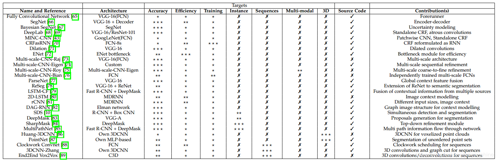

本篇论文是西班牙Alicante大学计算机信息技术系的Garcia-Garcia, Alberto等人2017年4月份所作的A Review on Deep Learning Techniques Applied to Semantic Segmentation
Abstract
图像语义分割越来越受到计算机视觉和机器学习研究者的关注。许多正在兴起的应用程序需要精确和高效的分割机制:自动驾驶、室内导航，甚至虚拟或增强现实系统等等。这一需求与深度学习方法在几乎所有与计算机视觉相关的领域或应用目标的兴起相一致，包括语义分割或场景理解。本文综述了语义分割的深度学习方法在各个应用领域的应用。首先，我们描述了这个领域的术语以及强制性的背景概念。接下来，将公开主要数据集和挑战，以帮助研究人员确定哪些数据集最适合他们的需求和目标。然后，回顾了现有的方法，强调了它们的贡献及其在该领域的意义。最后，给出了所述方法的定量结果，以及评价方法的数据集，并对结果进行了讨论。最后，我们指出了一组有前途的未来的工作，并得出了我们自己的结论关于最先进的使用深度学习技术实现语义分割。
Introduction
现在，语义分割——应用于静态二维图像，视频，甚至三维或体积数据-是计算机视觉领域的关键问题之一。从全局来看，语义分割是为完成场景理解铺平道路的高级任务之一。场景理解作为一个核心的计算机视觉问题的重要性突出的事实是，越来越多的应用程序滋养从图像推理知识。其中一些应用包括自动驾驶，人机交互，计算摄影，图像搜索引擎，增强现实等等。这类问题在过去已经通过各种传统的计算机视觉和机器学习技术得到了解决。尽管这些方法很受欢迎，但深度学习革命已经扭转了局面，许多计算机视觉问题——其中的语义分割——正在使用深度架构来解决，通常是卷积神经网络，在准确性甚至效率方面都远远超过其他方法。然而，深度学习与其他老前辈所取得的成熟还相差甚远。然而，相比于固有的计算机视觉及机器学习分支，深度学习还远不成熟。也因此，还没有一个统一的工作及对于目前最优方法的综述。该领域的飞速发展使得对初学者的启蒙教育比较困难，而且，由于大量的工作相继被提出，要跟上发展的步伐也非常耗时。于是，追随语义分割相关工作、合理地解释它们的论点、过滤掉低水平的工作以及验证相关实验结果等是非常困难的。
就我所知，本文是第一篇致力于综述用于语义分割的深度模型技术的文章。已经有较多的关于语义分割的综述调查，比如[12,13]等，这些工作在总结、分类现有方法、讨论数据集及评价指标以及为未来研究者提供设计思路等方面做了很好的工作。但是，这些文章缺少对某些最新数据集的介绍，他们不去分析框架的情况，而且没有提供深度学习技术的细节。因此，我们认为本文是全新的工作，而且这对于深度学习相关的语义分割社区有着重要意义。
本文核心贡献如下：
1）我们对于现有的数据集给出了一个全面的调查，这些数据集将会对深度学习技术推动的分割项目发挥作用；
2）我们对于多数重要的深度学习语义分割方法进行了深度有条理的综述，包括他们的起源、贡献等；
3）我们进行了彻底的性能评估，使用了多种评价指标如准确率、运行时间、内存占用等；
4）我们对以上结果进行了讨论，并给出了未来工作的一系列可能的发展方向，这些方向可能在未来的发展进程中取得优势。我们还给出了该领域目前最好方法的总结。
本文剩余部分安排：
第二章介绍了语义分割问题，同时引入了相关工作中常用的符号、惯例等。其他的背景概念如通用的深度神经网络也在这章中回顾；
第三章介绍了现有的数据集、挑战及实验基准；
第四章回顾了现有方法，基于其贡献自下而上排序。本章重点关注这些方法的理论及闪光点，而不是给出一个定量的评估；
第五章给出了一个简短的对于现有方法在给定数据集上定量表现的讨论，另外还有未来相关工作的发展方向；
第六章则总结全文并对相关工作及该领域目前最优方法进行了总结。
Terminology and Background Concepts
为了更好地理解语义分割问题是如何用深度学习框架解决的，有必要了解到其实基于深度学习的语义分割并不是一个孤立的领域，而是在从粗糙推理到精细化推理过程中很自然的一步。这可以追溯到分类问题，包括对整个输入做出预测，即预测哪个物体是属于这幅图像的，或者给出多个物体可能性的排序。对于细粒度推理来说，将接下来进行物体的定位与检测，这将不止提供物体的类别，而且提供关于各类别空间位置的额外信息，比如中心点或者边框。这样很显然，语义分割是实现细粒度推理的很自然的一步，它的目标是：对每个像素点进行密集的预测，这样每个像素点均被标注上期对应物体或区域的类别。这还可以进一步改进，比如实例分割（即对同一类的不同实例标以不同的标签），甚至是基于部分的分割（即对已经分出不同类别的图像进行底层分解，找到每个类对应的组成成分）。图1展示了以上提到的演变过程。在本文中，我们主要关注一般的场景标注，也就是像素级别的分割，但是我们也会回顾实例分割及基于部分的分割的较重要的方法。
最后，像素级别的标注问题可以松弛为以下公式：对于随机变量集合 中的每个随机变量，找到一种方法为其指派一个来自标签空间 中的一个状态。每个标签 表示唯一的一个类或者物体，比如飞机、汽车、交通标志或背景等。这个标签空间有 个可能的状态，通常会被扩展为 +1个，即视 为背景或者空的类。通常， 是一个二维的图像，包含W*H=N的像素点x。但是，这个随机变量的集合可以被扩展到任意维度，比如体数据或者超谱图像。
除了问题的定义，回顾一些可能帮助读者理解的背景概念也是必要的。首先是一些常见的被用作深度语义分割系统的网络、方法以及设计决策；另外还有用于训练的一些常见的技术比如迁移学习等。最后是数据的预处理以及增强式的方法等。
Common Deep Network Architectures
正如之前所讲，某些深度网络已经对该领域产生了巨大的贡献，并已成为众所周知的领域标准。这些方法包括AlexNet，VGG-16，GoogLeNet，以及ResNet。还有一些是由于其被用作许多分割架构的一部分而显得重要。因此，本文将在本章致力于对其进行回顾.
AlexNet
AlexNet（以作者名字Alex命名）首创了深度卷积神经网络模型，在2012年ILSVRC（ImageNet大规模图像识别）竞赛上以top-5准确率84.6%的成绩获胜，而与之最接近的竞争者使用了传统的而非深度的模型技术，在相同的问题下仅取得了73.8%的准确率。由Krizhecsky等人[14]给出的架构相对简单，包括卷积层、max-pooling层及ReLU层各五层作为非线性层，全连接层三层以及dropout层。图2给出了这个架构的示意。
VGG
VGG是由牛津大学Visual Geometry Group提出的卷积神经网络模型（以课题组的名字命名）。他们提出了深度卷积神经网络的多种模型及配置[15]，其中一种提交到了2013年ILSVRC（ImageNet大规模图像识别）竞赛上。这个模型由于由16个权重层组成，因此也被称为VGG-16，其在该竞赛中取得了top-5上92.7%的准确率。图3展示了VGG-16的模型配置。VGG-16与之前的模型的主要的不同之处在于，其在第一层使用了一堆小感受野的卷积层，而不是少数的大感受野的卷积层。这使得模型的参数更少，非线性性更强，也因此使得决策函数更具区分度，模型更好训练。
GoogLeNet
GoogLeNet是由Szegedy等人[16]提出的在ILSVRC-2014竞赛上取得top-5上93.3%准确率的模型。这个CNN模型以其复杂程度著称，事实上，其具有22个层以及新引入的inception模块（如图4所示）。这种新的方法证实了CNN层可以有更多的堆叠方式，而不仅仅是标准的序列方式。实际上，这些模块由一个网络内部的网络层（NiN）、一个池化操作、一个大卷积核的卷积层及一个小核的卷积层组成。所有操作均并行计算出来，而后进行1×1卷积操作来进行降维。由于这些模块的作用，参数及操作的数量大大减少，网络在存储空间占用及耗时等方面均取得了进步。
ResNet
微软提出的ResNet[17]由于在ILSVRC-2016中取得的96.4%的准确率而广受关注。除了准确率较高之外，ResNet网络还以其高达152层的深度以及对残差模块的引入而闻名。残差模块解决了训练真正深层网络时存在的问题，通过引入identity skip connections网络各层可以把其输入复制到后面的层上。
本方法的关键想法便是，保证下一层可以从输入中学到与已经学到的信息不同的新东西（因为下一层同时得到了前一层的输出以及原始的输入）。另外，这种连接也协助解决了梯度消失的问题
ReNet
为了将循环神经网络RNN模型扩展到多维度的任务上，Graves等人[18]提出了一种多维度循环神经网络（MDRNN）模型，将每个单一的循环连接替换为带有d个连接的标准RNN，其中d是数据的spatio-temporal维度。基于这篇工作，Visin等人[19]提出了ReNet模型，其不使用多维RNN模型，而是使用常见的序列RNN模型。这样，RNN模型的数量在每一层关于d（输入图像的维数2d）线性增长。在ReNet中，每个卷积层（卷积+池化）被4个同时在水平方向与竖直方向切分图像的RNN模型所替代，如图6所示：
Transfer Learning
从头训练一个深度神经网络通常是不可行的，有这样两个原因：训练需要足量的数据集，而这一般是很难得到的；网络达到收敛需要很长的时间。即便得到了足够大的数据集并且网络可以在短时间内达到收敛，从之前的训练结果中的权重开始训练也总比从随机初始化的权重开始训练要好[20,21]。迁移学习的一种重要的做法便是从之前训练好的网络开始继续训练过程来微调模型的权重值。
Yosinski等人[22]证明了即便是从较不相关的任务中迁移学习来的特征也要比直接从随机初始化学习的特征要好，这个结论也考虑到了随着提前训练的任务与目标任务之间差异的增大，可迁移性将减小的情况。
然而，迁移学习技术的应用并没有如此的直接。一方面，使用提前训练的网络必须满足网络架构等的约束，不过，因为一般不会新提出一个全新的网络结构来使用，所以使用现有的网络架构或网络组件进行迁移学习是常见的；另一方面，迁移学习中的训练过程本身相对于从头开始的训练过程来说区别非常小。合理选择进行微调的层是很重要的，一般选网络中较高的层因为底层一般倾向于保留更加通用的特征；同时，合理地确定学习率也是重要的，一般选取较小的值，因为一般认为提前训练的权重相对比较好，无需过度修改。
由于收集和创建像素级别的分割标注数据集的内在的困难性，这些数据集的规模一般不如分类数据集如ImageNet[23,24]等的大。分割研究中数据集的规模问题在处理RGB-D或3D数据集时更加严重，因为这些数据集规模更小。也因此，迁移学习，尤其是从提前训练好的分类网络中微调而来的方式，将会成为分割领域的大势所趋，并且已经有方法成功地进行了应用，我们将在后面几章进行回顾。
Data Preprocessing and Augmentation
数据增强技术被证明了有利于通用的尤其是深度的机器学习架构的训练，无论是加速收敛过程还是作为一个正则项，这也避免了过拟合并增强了模型泛化能力[15]。
数据增强一般包括在数据空间或特征空间（或二者均有）上应用一系列的迁移技术。在数据空间上应用增强技术最常见，这种增强技术应用迁移方法从已有数据中得到新的样本。有很多的可用的迁移方法：平移、旋转、扭曲、缩放、颜色空间转换、裁剪等。这些方法的目标均是通过生成更多的样本来构建更大的数据集，防止过拟合以及对模型进行正则化，还可以对该数据集的各个类的大小进行平衡，甚至手工地产生对当前任务或应用场景更加具有代表性的新样本。
数据增强对小数据集尤其有用，而且其效用已经在长期使用过程中被证明。例如，在[26]中，有1500张肖像图片的数据集通过设计4个新的尺寸（0.6,0.8,1.2,1.5），4个新的旋角（-45，-22,22,45），以及4个新的gamma变化（0.5,0.8,1.2,1.5）被增强为有着19000张训练图像的数据集。通过这一处理，当使用增强数据集进行微调时，其肖像画分割系统的交叠准确率（IoU）从73.09%提升到了94.20%。
Datasets and Challenges
以下两种读者应该阅读本部分内容：一是刚刚开始研究本领域问题的读者，再就是已经很有经验但是想了解最近几年其他研究者研究成果的可取之处的读者。虽然第二种读者一般很明确对于开始语义分割相关的研究来说数据集及竞赛是很重要的两个方面，但是对于初学者来说掌握目前最优的数据集以及（主流的）竞赛是很关键的。因此，本章的目标便是对研究者进行启发，提供一个对数据集的简要总结，这里面可能有正好他们需求的数据集以及数据增强或预处理等方面的技巧。不过，这也可以帮助到已经有深入研究的工作者，他们可能想要回顾基础或者挖掘新的信息。
值得争辩的是，对于机器学习来说数据是最重要的或者最重要的之一。当处理深度网络时，这种重要性更加明显。因此，收集正确的数据放入数据集对于任何基于深度学习的分割系统来说都是极为重要的。收集与创建一个足够大而且能够正确代表系统应用场景的数据集，需要大量的时间，需要领域专门知识来挑选相关信息，也需要相关的基础设施使得系统可以正确的理解与学习（捕捉到的数据）。这个任务的公式化过程虽然相比复杂的神经网络结构的定义要简单，但是其解决过程却是相关工作中最难的之一。因此，最明智的做法通常是使用一个现存的足够可以代表该问题应用场景的标准数据集。使用标准数据集还有一个好处就是可以使系统间的对比更加公平，实际上，许多数据集是为了与其他方法进行对比而不是给研究者测试其算法的，在对比过程中，会根据方法的实际表现得到一个公平的排序，其中不涉及任何数据随机选取的过程。
接下来我们将介绍语义分割领域最近最受欢迎的大规模数据集。所有列出的数据集均包含像素级别或点级别的标签。这个列表将根据数据内在属性分为3个部分：2维的或平面的RGB数据集，2.5维或带有深度信息的RGB（RGB-D）数据集，以及纯体数据或3维数据集。表1给出了这些数据集的概览，收录了所有本文涉及的数据集并提供了一些有用信息如他们的被构建的目的、类数、数据格式以及训练集、验证集、测试集划分情况。
2D Datasets
自始至终，语义分割问题最关注的是二维图像。因此，二维数据集在所有类型中是最丰富的。本章我们讨论语义分割领域最流行的二维大规模数据集，这考虑到所有的包含二维表示如灰度或RGB图像的数据集。
PASCAL视觉物体分类数据集（PASCAL-VOC）[27] (http://host.robots.ox.ac.uk/pascal/VOC/voc2012/) : 包括一个标注了的图像数据集和五个不同的竞赛：分类、检测、分割、动作分类、人物布局。分割的竞赛很有趣：他的目标是为测试集里的每幅图像的每个像素预测其所属的物体类别。有21个类，包括轮子、房子、动物以及其他的：飞机、自行车、船、公共汽车、轿车、摩托车、火车、瓶子、椅子、餐桌、盆栽、沙发、显示器（或电视）、鸟、猫、狗、马、绵羊、人。如果某像素不属于任何类，那么背景也会考虑作为其标签。该数据集被分为两个子集：训练集1464张图像以及验证集1449张图像。测试集在竞赛中是私密的。争议的说，这个数据集是目前最受欢迎的语义分割数据集，因此很多相关领域卓越的工作将其方法提交到该数据集的评估服务器上，在其测试集上测试其方法的性能。方法可以只用该数据集训练，也可以借助其他的信息。另外，其方法排行榜是公开的而且可以在线查询。
PASCAL 上下文数据集（PASCAL Context） [28] （http://www.cs.stanford.edu/∼roozbeh/pascal-context/）：对于PASCAL-VOC 2010识别竞赛的扩展，包含了对所有训练图像的像素级别的标注。共有540个类，包括原有的20个类及由PASCAL VOC分割数据集得来的图片背景，分为三大类，分别是物体、材料以及混合物。虽然种类繁多，但是只有59个常见类是较有意义的。由于其类别服从一个幂律分布，其中有很多类对于整个数据集来说是非常稀疏的。就这点而言，包含这59类的子集常被选作真实类别来对该数据集进行研究，其他类别一律重标为背景。
PASCAL 部分数据集（PASCAL Part）[29] （http://www.stat.ucla.edu/∼xianjie.chen/pascal part dataset/pascal part.html）：对于PASCAL-VOC 2010识别竞赛的扩展，超越了这次竞赛的任务要求而为图像中的每个物体的部分提供了一个像素级别的分割标注（或者当物体没有连续的部分的时候，至少是提供了一个轮廓的标注）。原来的PASCAL-VOC中的类被保留，但被细分了，如自行车被细分为后轮、链轮、前轮、手把、前灯、鞍座等。本数据集包含了PASCAL VOC的所有训练图像、验证图像以及9637张测试图像的标签。
语义边界数据集（SBD）[30] （http://home.bharathh.info/home/sbd）：是PASCAL数据集的扩展，提供VOC中未标注图像的语义分割标注。提供PASCAL VOC 2011 数据集中11355张数据集的标注，这些标注除了有每个物体的边界信息外，还有类别级别及实例级别的信息。由于这些图像是从完整的PASCAL VOC竞赛中得到的，而不仅仅是其中的分割数据集，故训练集与验证集的划分是不同的。实际上，SBD有着其独特的训练集与验证集的划分方式，即训练集8498张，验证集2857张。由于其训练数据的增多，深度学习实践中常常用SBD数据集来取代PASCAL VOC数据集。
微软常见物体环境数据集（Microsoft COCO） [31]：(http://mscoco.org/) 是另一个大规模的图像识别、分割、标注数据集。它可以用于多种竞赛，与本领域最相关的是检测部分，因为其一部分是致力于解决分割问题的。该竞赛包含了超过80个类别，提供了超过82783张训练图片，40504张验证图片，以及超过80000张测试图片。特别地，其测试集分为4个不同的子集各20000张：test-dev是用于额外的验证及调试，test-standard是默认的测试数据，用来与其他最优的方法进行对比，test-challenge是竞赛专用，提交到评估服务器上得出评估结果，test-reserve用于避免竞赛过程中的过拟合现象（当一个方法有嫌疑提交过多次或者有嫌疑使用测试数据训练时，其在该部分子集上的测试结果将会被拿来作比较）。由于其规模巨大，目前已非常常用，对领域发展很重要。实际上，该竞赛的结果每年都会在ECCV的研讨会上与ImageNet数据集的结果一起公布。
图像与注释合成数据集（SYNTHIA）[32] （http://synthia-dataset.net/）是一个大规模的虚拟城市的真实感渲染图数据集，带有语义分割信息，是为了在自动驾驶或城市场景规划等研究领域中的场景理解而提出的。提供了11个类别物体（分别为空、天空、建筑、道路、人行道、栅栏、植被、杆、车、信号标志、行人、骑自行车的人）细粒度的像素级别的标注。包含从渲染的视频流中提取出的13407张训练图像，该数据集也以其多变性而著称，包括场景（城镇、城市、高速公路等）、物体、季节、天气等。
KITTI [56] 是用于移动机器人及自动驾驶研究的最受欢迎的数据集之一，包含了由多种形式的传感器得出的数小时的交通场景数据，包括高分辨率RGB、灰度立体摄像机以及三维激光扫描器。尽管很受欢迎，该数据集本身并没有包含真实语义分割标注，但是，众多的研究者手工地为该数据集的部分数据添加标注以满足其问题的需求。Alvarez等人[36,37]为道路检测竞赛中的323张图片生成了真实标注，包含三个类别：道路、垂直面和天空。Zhang等人[39]标注了252张图片，其中140张训练、112张测试，其选自追踪竞赛中的RGB和Velodyne扫描数据，共十个类。Ros等人[38]在视觉测距数据集中标注了170个训练图片和46个测试图片，共11个类。
YouTube物体数据集 [57] 是从YouTube上采集的视频数据集，包含有PASCAL VOC中的10个类。该数据集不包含像素级别的标注，但是Jain等人[42]手动的标注了其126个序列的子集。其在这些序列中每10个帧选取一张图片生成器语义标签，总共10167张标注的帧，每帧480x360的分辨率。
Adobe肖像分割数据集 [26] （http://xiaoyongshen.me/webpage portrait/index.html） 包含从Flickr中收集的800x600的肖像照片，主要是来自手机前置摄像头。该数据集包含1500张训练图片和300张预留的测试图片，这些图片均完全被二值化标注为人或背景。图片被半自动化的标注：首先在每幅图片上运行一个人脸检测器，将图片变为600x800的分辨率，然后，使用Photoshop快速选择工具将人脸手工标注。这个数据集意义重大，因为其专门适用于人脸前景的分割问题。
上下文语料数据集（MINC）[43] 是用于对块进行分类以及对整个场景进行分割的数据集。该数据集提供了23个类的分割标注（文中有详细的各个类别的名称），包含7061张标注了的分割图片作为训练集，5000张的测试集和2500张的验证集。这些图片均来自OpenSurfaces数据集[58]，同时使用其他来源如Flickr或Houzz进行增强。因此，该数据集中的图像的分辨率是变化的，平均来看，图片的分辨率一般是800x500或500x800。
斯坦福背景数据集[40] （http://dags.stanford.edu/data/iccv09Data.tar.gz）包含了从现有公开数据集中采集的户外场景图片，包括LabelMe, MSRC, PASCAL VOC 和Geometric Context。该数据集有715张图片（320x240分辨率），至少包含一个前景物体，且有图像的水平位置信息。该数据集被以像素级别标注（水平位置、像素语义分类、像素几何分类以及图像区域），用来评估场景语义理解方法。
SiftFlow [41]：包含2688张完全标注的图像，是LabelMe数据集[59]的子集。多数图像基于8种不同的户外场景，包括街道、高山、田地、沙滩、建筑等。图像是256x256的，分别属于33个语义类别。未标注的或者标为其他语义类别的像素被认为是空。
2.5D Datasets
随着廉价的扫描器的到来，带有深度信息的数据集开始出现并被广泛使用。本章，我们回顾最知名的2.5维数据集，其中包含了深度信息。
NYUDv2数据集[46]（http://cs.nyu.edu/∼silberman/projects/indoor scene seg sup.html）包含1449张由微软Kinect设备捕获的室内的RGB-D图像。其给出密集的像素级别的标注（类别级别和实力级别的均有），训练集795张与测试集654张均有40个室内物体的类[60]，该数据集由于其刻画室内场景而格外重要，使得它可以用于某种家庭机器人的训练任务。但是，它相对于其他数据集规模较小，限制了其在深度网络中的应用。
SUNRGBD数据集[48]（http://rgbd.cs.princeton.edu/）由四个RGB-D传感器得来，包含10000张RGB-D图像，尺寸与PASCAL VOC一致。该数据集包含了NYU depth v2 [46], Berkeley B3DO [61], 以及SUN3D [47]数据集中的图像，整个数据集均为密集标注，包括多边形、带方向的边界框以及三维空间，适合于场景理解任务。
RGB-D物体数据集[49] （http://rgbd-dataset.cs.washington.edu/）该数据集由视频序列构成，有300个常见的室内物体，分为51个类，使用WordNet hypernym-hyponym关系进行分类。该数据集使用Kinect型三维摄像机进行摄制，640x480RGB图像，深度信息30赫兹。对每一帧，数据集提供了RGB-D及深度信息，这其中包含了物体、位置及像素级别的标注。另外，每个物体放在旋转的桌面上以得出360度的视频序列。对于验证过程，其提供了22个标注的自然室内场景的包含物体的视频序列。
3D Datasets
纯粹的三维数据集是稀缺的，通常可以提供CAD网格或者其他的体元表示如点云等。为分割问题获取三维数据集是困难的，因此很少有深度学习方法可以处理这种数据。也因此，三维数据集目前还不是很受欢迎。尽管如此，我们还是介绍目前出现的相关数据集来解决现有的问题。
ShapeNet部分数据集[50]（http://cs.stanford.edu/ericyi/project page/part annotation/）是ShapeNet[63]数据集的子集，关注于细粒度的三维物体分割。包含取自元数据及16个类的31693个网格，每个形状类被标注为二到五个部分，整个数据集共有50个物体部分，也就是说，物体的每个部分比如飞机的机翼、机身、机尾、发动机等都被标注了。真实标注按照被网格分割开的点呈现。
斯坦福2D-3D-S数据集[51]（http://buildingparser.stanford.edu）是一个多模态、大规模室内空间数据集，是斯坦福三维语义分析工作[64]的扩展。提供了多个模态：二维RGB，2.5维添加深度信息的图片、三维网格和点云，均提供分割标注信息。该数据集有70496张高分辨率的RGB图像（1080x1080分辨率），以及其对应的深度图谱、表面法线、网格以及点云，军事带有像素级别及点级别的语义标注信息。这些数据取自6个室内区域，分别来自三个不同的教育与办公建筑。共有271个房间，大约7亿个点，被标以13个类。
三维网格分割基准数据集[52]（http://segeval.cs.princeton.edu/）该基准数据集有380个网格，被分为19个类。每个网格手动的被分割为不同的功能区域，主要目标是提供对于人们如何分配网格功能的一个概率分布。
悉尼城市物体数据集[53]（http://www.acfr.usyd.edu.au/papers/SydneyUrbanObjectsDataset.shtml）该数据集包含多个常见的城市道路物体，由Velodyne HDK-64E LIDAR扫描得到，共有631个独立扫描的点云，由车辆、行人、标志、树木等类别组成。有趣的是，除了正常的扫描之外，还提供了全景360度的扫描标注。
大规模点云分类基准数据集[54]（http://www.semantic3d.net/）该基准数据集提供手工标注的三维点云，面向自然与城市场景。该数据集在形成点云时保留了细节与密度等信息，训练集和测试集各包含15个大规模的点云，其规模达到超过十亿个标注点的级别。
Methods
深度学习技术在各种高层视觉任务上取得了巨大的成功，尤其是监督方法如卷积神经网络CNN用于图像分类或物体检测 [14,15,16]，这激励着研究者们探索这些方法的像素级别标注能力，如语义分割能力。这些深度学习技术区别于传统方法的关键优势在于其强大的针对当前问题学习合适的特征表示的能力，例如，对于一个特定数据集的像素级标注问题，其使用一种端对端的方法而不是手工设计的特征，而手工设计特征需要领域专门知识、耗时耗力而且有时太过精细化以致于只能在某个特定的场景下使用。
最近，最成功用于语义分割的深度学习技术均来自同一个工作，即全卷积网络FCN [65]，该方法的出色之处在于，其利用了现存的CNN网络作为其模块之一来产生层次化的特征。作者将现存的知名的分类模型包括AlexNet、VGG-16、GoogLeNet和ResNet等转化为全卷积模型：将其全连接层均替换为卷积层，输出空间映射而不是分类分数。这些映射由小步幅卷积上采样（又称反卷积）得到，来产生密集的像素级别的标签。该工作被视为里程碑式的进步，因为它阐释了CNN如何可以在语义分割问题上被端对端的训练，而且高效的学习了如何基于任意大小的输入来为语义分割问题产生像素级别的标签预测。本方法在标准数据集如PASCAL VOC分割准确率上相对于传统方法取得了极大的进步，且同样高效。由于上述及更多显著的贡献，FCN成为了深度学习技术应用于语义分割问题的基石，其处理过程如图7所示。
尽管FCN模型强大而普适，它任然有着多个缺点从而限制其对于某些问题的应用：其固有的空间不变性导致其没有考虑到有用的全局上下文信息，其并没有默认考虑对实例的辨识，其效率在高分辨率场景下还远达不到实时操作的能力，并且其不完全适合非结构性数据如3D点云，或者非结构化模型。这些问题我们将在本节进行综述，同时给出目前最优的解决这些问题的办法。表2给出了这个综述的总结，展示了所有的提及的方法（按照本节中出现的先后排序）、他们所基于的架构、主要的贡献、以及基于其任务目标的分级：准确率、效率、训练难度、序列数据处理、多模式输入以及3D数据处理能力等。每个目标分为3个等级，依赖于对应工作对该目标的专注程度，叉号则代表该目标问题并没有被该工作考虑进来。另外，图8对提及方法的关系进行了形象化的描述。
Decoder Variants
除了FCN之外，还有其他的变体来将原用于分类的网络转化为适合分割的形式。有争议的说，基于FCN的架构更加受欢迎，也更成功，但是其他替代的架构也同样值得注意。一般来说，这些网络均选用一种分类网络如VGG-16，然后去掉其全连接层。分割网络的这个部分通常被称之为编码器，产生低分辨率的图像表示或者特征映射。而问题在于学习如何解码或者将这些低分辨率的图像为分割问题映射到像素级别的预测上去。这部分被称为解码器，一般是这种架构的不同方法的区别所在。
SegNet [66] 是理解这种区别的很明显的例子（见图9）。解码器部分由一系列的上采样及卷积层组成，最终接上一个softmax分类器来预测像素级别的标签，以此作为输出，可以达到与输入图像相同的分辨率。解码器部分的每个上采样层对应于编码器中的一个最大池化层，解码器中的这些层用索引自编码器阶段的对应的特征映射来进行最大池化，从而对目前的特征映射进行上采样。这些上采样得来的映射接下来将由一系列的可训练的滤波器集合来进行卷积，从而产生密集的特征映射。当特征映射被修复为与原输入相同分辨率的时候，其将被输入softmax分类器中得到最终的分割结果。
而另一方面，基于FCN的架构利用了可学习的反卷积滤波器来对特征映射进行上采样，然后，上采样得到的特征映射将按照元素优先的方式加入到编码器部分卷积层得到的对应的特征映射中。图10展示了两种方法的对比。
Integrating Context Knowledge
语义分割需要对多种空间尺度的信息予以整合，也需要对局部与全局信息进行平衡。一方面，细粒度的或者局部的信息对于提高像素级别的标注的正确率来说是关键的；另一方面，整合图像全局的上下文信息对于解决局部模糊性问题来说也是重要的。
一般的CNN模型对于处理这种平衡不是很擅长。池化层可以使网络取得某种程度的空间不变性并保持同样的计算效率，却丢失了全局的上下文信息。即便是纯的CNN网络，即没有池化曾的CNN，也同样受限，因为其神经元的感受野只能随着层数线性增长。
可以采用很多方法来使CNN对全局信息敏感：用条件随机场（CRF）作为后处理过程来调优结果，多尺度聚合，或者甚至是将对上下文的建模延缓到另一种深度模型中，如RNN
Conditional Random Fields
如前所述，CNN结构内在的空间转化不变性限制了其应用到分割问题上的准确率（尤其是其在空间位置上的准确性）。调优分割架构的输出并强化其捕捉细粒度信息的一个通用的办法就是引入条件随机场（CRF）作为其后处理模块。CRF促成了底层图像信息（如像素间的相互关系[92,93]）与产生像素级别的类别标签的多类别推理输出的结合，这种结合对于捕捉长期依赖性质尤其重要，这也是关注于局部细节的CNN所未能考虑到的。
DeepLab模型[68,69]使用了全连接的两两之间的CRF模型[94,95]作为其流程中的一个独立的后处理步骤，以此对分割结果进行调优。该模型将每个像素建模为某区域内的一个节点，无论两个像素距离多远，其两两之间的关系都会被衡量，因此，本模型也被称为密集或全连接因子图。使用此模型后，无论短期的还是长期的像素相互关系都被考虑进来，使得系统可以考虑到分割过程中需要的细节信息，而由于CNN的空间不变性，这些信息是CNN结构所未能考虑的。尽管全连接模型通常是低效的，该模型由于可以用概率推理来近似，所以也可以达到相对地高效。图11展示了这种基于CRF的后处理过程对DeepLab模型产生的得分和信念映射产生的影响。
Wild网络[43]中的材质识别使用了多种CNN模型用来识别MINC数据集中的块。这些CNN模型被以滑动窗口的方式使用，用来分类这些块，他们的权重值被转移到FCN的组成网络中，而FCN通过添加对应的上采样层来整合这些网络。多个输出取平均便得到了一个平均的映射。最后，与DeepLab中相同的CRF（只不过是离散化优化的）被用来预测与调优每个像素点处的材质。
应用CRF来调优FCN网络的分割结果的另一个显著的工作便是Zheng等人提出的CRFasRNN模型[70]。该工作主要的贡献便是将密集CRF重写为带有成对势能的形式，作为网络的组成部分之一。通过展开均值场推理的各个步骤，并将其视为RNN结构，该工作成功地将CRF与RNN整合在一起成为一个完整的端对端的网络。这篇文章的工作说明了将CRF重写为RNN模型来构造出深度网络的一部分，与Pinheiro等人[81]的工作行成了对比，而该工作使用RNN来对大规模的空间依赖性进行建模。
Dilated Convolutions
扩张卷积，又称`a-trous卷积，是对考虑Kronecker的卷积核[96]的扩展，而这种卷积核可以指数级地扩大感受野而不丢失分辨率。换句话说，扩张卷积是常规的利用上采样滤波器的方法。扩张率 控制着上采样因子，如图12所示，堆叠的以l为扩张率的扩张卷积使得感受野呈现指数级的增长，而滤波器的参数保持线性增长。这意味着扩张卷积可以在任意分辨率图片上高效地提取密集特征。另外，值得注意的是一般的卷积只是扩张率为1时的特殊情况。
实际上，这与做正常的卷积之前扩张卷积核是等同的，这意味着根据扩张率扩充其尺寸，为空元素位置补零，换句话说，当扩张率大于1时，滤波器参数将与非近邻元素相配对。图13展示了这种扩张的滤波器。
使用扩张卷积的最重要的工作便是Yu等人[71]提出的多尺度上下文聚合模型、上文提及的DeepLab模型（其升级版本）[69]、以及实时处理网络ENet[72]。所有这些将越来越大的各种扩张率结合，使得模型具有更大的感受野，同时不增添额外的消耗，也不会过度地对特征映射进行下采样。这些工作同时具有相同的趋势：扩张卷积与紧密多尺度上下文聚合紧密耦合，这我们将在后面章节中解释。
Multi-scale Prediction
整合上下文知识的另一种可能的做法便是使用多尺度预测。CNN中几乎每个单独的参数都会影响到得到的特征映射的大小，换句话说，非常相似的架构也会对输入图像的像素数量产生较大的影响，而这关系到每个特征映射。这意味着滤波器将会潜在地检测特定尺度的特征（大致上有着特定的程度）。另外，网络的参数一般都与要解决的问题息息相关，也使得模型向不同尺度的扩展变得更难。一种可能的解决方案便是使用多尺度的网络，这种网络一般都是选用多个处理不同尺度的网络，最后将他们的预测结果结合，产生一个单一的输出。
Raj等人[73] 提出了全卷积VGG-16的一种多尺度版本，有着两个路径，一个是在原始分辨率上处理输入，使用的是一个浅层的卷积网络，再一个就是在两倍分辨率上处理，使用全卷积VGG-16和一个额外的卷积层。第二个路径的结果经过上采样后与第一个路径的结果相结合，这个串联起来的结果再经过一系列的卷积层，得到最终的输出。这样，这个网络便对尺度变换更加鲁棒了。
Roy等人[75]采取了另外的方法解决这个问题，他们选用了包含4个多尺度CNN的网络，而这4个网络有着相同的架构，取自Eigen等人[74]。其中之一致力于为当前场景找出语义标签。这个网络（整体上）以一个从粗糙到精细的尺度序列来逐步的提取特征（如图14）。
另一个重要的工作是Bian等人[76]提出的网络，这个网络包含n个FCN，可以处理不同尺度的问题。该网络提取的特征将融合在一起（先使用合适的填充方法进行必要的上采样），然后通过一个额外的卷积层之后得到最终的分割结果。这个工作的主要贡献便是这个两步的学习过程，首先，独立的训练每个网络，然后，这些网络将结合，最后一层将被微调。这种多尺度的模型可以高效地添加任意数量的训练好的网络进来。
Feature Fusion
在分割问题中，向全卷积神经网络架构中加入上下文信息的另一种方式便是进行特征融合。特种融合技术将一个全局特征（由某网络中较前面的层提取得到）与一个相对局部的特征映射（后边的层提取得）相结合。常见的架构如原始FCN网络利用跳跃连接的方式进行延迟特征融合，也是通过将不用层产生的特征映射相结合（图15）
另一种方法便是提前融合，这一方法来自ParseNet[77]中的上下文模块。全局特征被反池化为与局部特征相同的尺寸，然后，将这两种特征进行串联后得到一个合并的特征，输入到下一层或者直接用于分类器的学习。如图16所示。
SharpMask[84] 这个工作继续发展了这种特征融合的想法，其引入了一种先进的调优模块来将前面层产生的特征合并到后面的层，这个模块使用的是一种自上而下的架构。由于其重点关注实例分割方面，所以这个工作我们将在后面章节介绍。
Recurrent Neural Networks
我们注意到，CNN网络在非一维数据如图像等的处理上取得了成功，但是，这些网络依赖于手工设计的核，将网络限制于局部上下文中。而得益于其拓扑结构，循环神经网络成功地应用到了对长期或短期序列的建模上。这样，通过将像素级别的以及局部的信息联系起来，RNN可以成功地建模全局上下文信息并改善语义分割结果。但是，一个重要的问题便是，图片中缺乏自然的序列结构，而标准的RNN架构关注的恰恰是一维的输入。
基于面向分类的ReNet模型，Visin等人[19]提出了ReSeg模型[78]用于语义分割，如图17所示。在本方法中，输入图像在第一层VGG-16层中被处理，特征映射结果送入一个或更多的ReNet层中来进行微调。最终，特征映射的尺寸被调整，使用的是基于反卷积的上采样层。在本方法中，门循环单元（GRU）被用来平衡占用空间与计算复杂度。一般的RNN在建模长期依赖关系时表现不好，主要是因为梯度消失问题的存在。由此产生的长短期记忆网络（LSTM）[97] 和GRU [98]是该领域目前最好的两种方法，可以避免以上问题。
受ReNet架构的启发，有人为场景标注问题提出了一种新型的长短期记忆上下文融合模型（LSTM-CF）[99]。该方法使用了两种不同的数据源：RGB信息和深度信息。基于RGB的部分依赖于DeepLab架构[29]的变体，串联了三种不同尺度的特征来丰富特征表达（由[100]处获得启发）。全局信息在两个部分（深度信息部分与光学信息部分）都是竖直的，最终这两种竖直的上下文信息在水平方向上被融合。
我们注意到，对图像全局上下文信息的建模与二维循环方法很有关系，只需在输入图像上按照水平和竖直方向分别将网络展开。基于相同的想法，Byeon等人[80]提出了简单的二维的基于LSTM的架构，其中的输入图像被分割为无重叠的窗口，然后将其送入四个独立的LSTM记忆单元。该工作突出贡献是其计算复杂度较低、运行与单个CPU以及其模型的简单性。
另一种捕获全局信息的方法依赖于更大的输入窗口的使用，这样就可以建模更大范围内的上下文信息。但是，这也降低了图像的分辨率，而且引入了其他类似于窗口重叠等的问题。然而，Pinheiro等人[81] 引入了循环卷积神经网络（rCNN）来使用不同的窗口大小循环地训练，这相当于考虑了之前层中的预测信息。通过这种方法，预测出的标签将自动地平滑，从而使网络表现更好。
无向循环图（UCG）同样被用来建模图像上下文信息从而用于语义分割[82]。但是，RNN并不直接适用于UCG，为了解决这个问题，无向循环图被分解为了多个有向图（DAG）。在本方法中，图像在三个不同的层中被处理，分别是：CNN处理得到图像的特征映射，DAG-RNN对图像的上下文依赖信息进行建模，反卷积层将特征映射上采样。这个工作说明了RNN如何可以与图相结合，被用来建模长期范围内的上下文依赖，并超过已有的最优方法。
Instance Segmentation
实例分割被认为是语义分割的下一步，与此同时其相对于其他底层像素级别分割技术来说是最具挑战性的。该问题的主要目标是将同一类的不同物体分割为各个实例，这个处理过程的自动化操作并不直观，因此，实例的数量并不是预先知道的，对得到的预测的评估方法也不像语义分割一样达到像素级别。所以，这个问题至今仍有部分未被解决，但是考虑到其潜在的应用，目前领域研究者对此保有兴趣。实例标注为我们分析遮挡情况提供了额外的信息，还可以数出属于同一类的物体的数量，从而可以为执行抓取任务的机器人检测出特定的物体。还有更多的其他应用。
基于此目的，Hariharan等人[10]提出了一种同时检测和分割（SDS）的方法来提高现有方法的表现。这个方法首先使用了一种自下而上的层次化图像分割方法，称之为多尺度可结合组（MCG）[101]，以此得到建议的分割区域。对于每个区域，使用适合的区域CNN（R-CNN）[102]版本来提取特征，其是由MCG方法中给出的边界框微调而来，而不是由选择性的搜索以及前景区域得出。然后，对每个建议的区域使用线性支持向量机（SVM）在CNN顶层特征上进行分类。最后，为了进行调优，非最大抑制（NMS）方法被应用到了先前的区域建议上。
接下来，Pinheiro等人[83]提出了深度遮盖（DeepMask）模型，这是一种对物体给出提议的方法，基于单个的卷积网络。这个模型对于一个输入的分块预测出一个分割的覆盖区域，并给出这个块中包含物体的概率。这两个任务同时被一个单个的网络所学习和计算，他们共享多数的层，除了最后一层实现特定任务的层。
上述作者基于DeepMask架构（并由于其有效性将其作为模型的起点）又提出了一种全新的模型，应用了一种自上而下的调优策略[84]解决物体实例分割问题，并在准确率和速度等方面取得了更好的表现。该过程的目标是高效的将底层特征与更后边的层中产生的高层语义信息相结合，这个过程包含了堆叠在一起的不同的调优模块（每个模块后都跟着池化层），目的在于通过生成一个新的上采样物体编码来转化池化的影响。图18展示了SharpMask中的调优模块。
另一种方法由Zagoruyko等人[85]提出，使用快速R-CNN作为起点，使用DeepMask的物体提议而不是选择性搜索。这种结合多种方法的系统成为多路分类器，提高了COCO数据集上的表现，对于快速R-CNN做出了三处修改：使用整合的损失项改善了定位能力，使用中心区域提供上下文信息，以及最终跳过连接来为网络给出多尺度的特征。该系统相对于快速R-CNN取得了66%的提升。
可以看出，多数提到的方法依赖于现有的物体检测方法，这限制了模型的表现。即使这样，实例分割过程依然有很多问题未被解决，上述方法仅仅是这个有挑战性的方向的一小部分。
RGB-D Data
我们注意到，相当数量的语义分割的工作都是使用的照片式的数据，但是，廉价的RGB-D传感器促进了结构化信息的使用，这种传感器提供了有用的来自深度信息的几何线索。一些关注于RGB-D场景分割的工作已经在细粒度标注准确率上取得了进步，使用了深度信息而不仅仅是照片式的数据。利用深度信息进行分割更具挑战，由于不可预测的场景光照变化伴随着复杂遮挡导致的不完整的物体表示。但是，很多工作已经可以成功地使用深度信息提高准确率。
带有深度信息的图片并不能直接应用到专门处理照片式数据的模型中。深度数据需要被编码为每个像素点上的三个通道，就好像是RGB图像一样。有许多不同的技术，比如水平-高度-角度（HHA）[11]方法，这个方法被用于将深度信息编码为以下三个通道：水平方向的差距，距离“地面”的高度，以及局部表面法向与推知的重力方向的夹角。这样，我们便可以向为RGB数据设计的模型中输入深度信息，并通过从结构化信息中学习新的特征来提高模型的性能。一些方法如[99]便是基于这种编码技术的。
相关工作中还有一些工作，如同使用RGB-D数据的方法一样，利用一种多视角的方法来提高目前的单视角的工作的性能。
Zeng等人[103]提出了一种使用多视角RGB-D数据和深度学习技术的物体分割方法。多视角捕获的RGB-D数据被送入FCN网络中，得到每个图像每个像素点分别作为40类的概率。分割标签由阈值截断，该阈值为各个视角下平均概率的三倍。另外，本工作训练多个网络（AlexNet [14] 和VGG-16 [15]）来提取特征，然后来评估使用深度信息的优势。本工作发现，加入深度信息并没有为分割效果带来任何的提高，而这可能是深度信息的噪声导致的。这个工作是在2016年亚马逊挑选竞赛（Amazon Picking Challenge）上被提出的，是自RGB图像数据独立地输入FCN网络以来，对多视角深度学习系统的一个主要的贡献。
Ma等人[104]提出了一个全新的物体类别分割方法，使用的也是多视角深度学习技术。多个视角是由运动的RGB-D摄像机拍摄的，在训练阶段，使用RGB-D SLAM技术获取摄像机轨迹，然后将RGB-D图像扭曲成与真实标注数据相同尺度以保证训练中的多视角的连续性。该方法基于FuseNet[105]，其在语义分割过程中结合了RGB与深度图像，通过加入多尺度的损失最小化技术改善了原有工作的表现。
3D Data
三维几何数据如点云或多边形网格数据等是一种非常实用的数据表示形式，原因在于其提供的附加的维度使得算法可以考虑更加丰富的空间信息，而这显然对分割很有帮助。但是，绝大多数成功的深度学习分割技术，尤其是基于CNN的，开始并不是被设计为解决上面提到的非结构化或者不规则的输入的。为了在卷积网络中促成参数共享以及其他优化形式，多数工作借助于三维立体网格或者映射来将非结构化或者不规则点云或网格转化为普通表示形式，然后再将其输入网络中。例如，Huang等人[86]（图19）选取了一个点云，通过一个密集的立体网格对其进行分析，生成了一系列的占位体元，将其作为三维CNN的输入并为每个体元产生一个标签，最后，算法将标签映射回点云。虽然该方法已被成功地应用，其仍有不足之处如难以量化、丢失空间信息以及不必要的大规模表示等。因此，众多研究者致力于构造出一种可以直接处理非结构化三维点集或网格的深度模型。
PointNet[87]是一个先驱性的工作，提出了一种深度神经网络来将原始的点云作为输入，给出了一个同时进行分类和分割的联合的架构。图20展示了这种可以处理无序三维点集的双模块的网络。
我们可以看出，PointNet是一种与众不同的深度网络架构，因为其基于全连接层而不是卷积层。该模型分为两部分，分别负责分类和分割。分类子网络以点云为输入，采用一系列变换以及多层感知机（MLP）来生成特征，然后使用最大池化来生成全局特征以描述原输入的点云。另外的MLP将对这些全局特征进行分类，然后为每一个类得出分数。分割子网络将全局特征与分类网络生成的每个点的特征串联起来，然后应用另外的两个MLP来生成特征，并计算出每个点属于每一类的得分。
Video Sequences
我们观察到，单幅图像的分割已经取得了较大的进展，但是，当处理图像序列时，许多系统简单地使用逐帧处理的方法，这种方法比较奏效，也通常可以得到不错的结果，但是，这样处理是极其耗时的，因此通常不可行。另外，这种方法完全忽略了短期连续性以及一致性信息，而这些信息极可能会提高系统准确率并减少运行时间。
可争辩地，这方面最具标志性的工作便是Shelhamer等人[88]提出的时钟FCN网络。该网络改编自FCN，使用视频中的短期线索来减少推理时间，同时保证正确率。这种时钟的方法依赖于以下想法：特征速度，即网络中短期的特征变化率，其在各层中经过某帧时是变化的，因此来自浅层的特征变化的比来自深层的特征要快。基于此假设，各层可以被分为不同的阶段，于是可以按照其深度指定不同的更新率来进行处理。这样，由于其语义上的稳定性，深度特征可以在各帧被保持，也就节省了推理时间。图21展示了这种时钟FCN的结构。
值得注意的是，作者提出了两种更新速率的策略：固定的和自适应的。固定的策略直接为每个阶段设置一个常数时间来重新计算特征。自适应策略则使用数据驱动的方法来设置时钟，例如，时钟依赖于运动或语义改变的数量。图22展示了这种自适应策略的例子。
Zhang等人[106]采用了一种不同的方式，使用了3DCNN这种原本被设计来学习三维体数据特征的方法，以此来从多通道输入如视频片段中学出层次化的时空联合特征。与此同时，该工作将输入片段过分割为超体元，然后利用这些超体元图并将学得的特征嵌入其中，最终将在超体元图上应用graph-cut[107]来得到分割结果。
另一个重要的方法采用了三维卷积的思想，是由Tran等人[89]提出的一种深度的端对端的、体元对体元的预测系统。该方法将自己提出的三维卷积（C3D）网络应用于先前的工作[108]中，在最后添加了反卷积层以将其扩展为面向语义分割的算法。该系统将输入的视频片段分为包含16个帧的小片段，对每个片段单独进行预测。其主要的贡献在于其使用的三维卷积技术。这种卷积技术使用了三维的滤波器，适应了从多通道数据中学出的时空联合特征，图23展示了应用到多通道输入数据上的二维和三维卷积的不同之处，证明了视频分割情况下三维卷积核的有用性。
Discussion
前面的章节我们定性地回顾了现有的方法，也就是说，我们没有考虑任何定量的结果。在本章，我们从数学的角度讨论这些方法。首先，我们将描述最常用的评价指标，这些指标在以下三方面度量语义分割系统的表现：运行时间、占用内存、准确率。然后，我们将收集这些方法在最具代表性的数据集上运行的结果（以本文中所述的指标度量）。接着，我们将总结这些结果。最终，我们列举未来研究可能的方向，以及我们认为的该领域的重点之处。
Evaluation Metrics
对于一个分割系统来说，要对该领域产生重要的影响，必须经过严格的评估。另外，评估过程中必须使用标准的众所周知的评价指标，这样对于现有方法来说才是公平的。进一步的，必须对方法的各个方面进行评估，然后才能断言该系统的有效性，这些方面包括运行时间、占用内存、准确率等。由于对目标或上下文的依赖性，某些指标可能会更加重要，也就是说，在一个实时处理的应用中，可能会为了运行速度而牺牲准确率。但是，为了科学的严谨性，提供该方法的所有可能的评价指标度量是极其重要的。
Execution Time
但是，考虑到可重复性以及对后续研究者的帮助，有必要在提供运行时间的同时给出系统运行的硬件信息，以及基准方法的配置。如果合理地做到了这些，后续的研究者们将可以判断出这个方法是否对其真实应用实用，并且可以使用相同的环境进行公平的对比。
Memory Footprint
内存占用是分割问题中的另一个重要的考量。虽然不及运行时间那样受限，因为扩充容量一般是可行的，其仍然作为系统的一个限制因素。在某些场景下，例如机器人平台上的板载芯片，内存并不会像高性能服务器中一样充裕。即使是普遍用来加速深度网络的高端的显卡（GPU）也不会搭载大容量的存储空间。基于这些考虑，以及与在时间问题上相似的对于实际应用的考虑，详细记录网络所占用的最大及平均存储空间是极其有用的。
Accuracy
已经提出了许多用于评估语义分割问题准确率的评价指标，这些指标通常是像素级准确率及IoU的变体。我们报告了语义分割方面最常用的评价指标，用来度量逐个像素标注类的方法的表现。为便于解释，我们给出下述标号的意思：我们假设共有k+1类，（从L0到Lk，包括一个空类或者是背景），pij是本属于第i类却被分到第j类的像素数量。也就是说，pii代表的是分类正确的正例数量，其他几个p值类似。
像素准确率（PA）：这是最简单的指标，仅仅计算正确分类的像素数量与所有像素数量的比值。
像素准确率平均值（MPA）：对PA的轻微改进版本，正确分类像素的比例是按类计算的，最终由类总数取平均。
平均交并比（MIoU）：这是用于分割问题的标准评价指标，其计算的是两个集合的交集与其并集的重合比例，在本问题中，其计算的便是真实分割与系统预测的分割之间的交并比。这个比例可以被重新定义为真实正例（交集）的数量除以总数量（包括真实正例、错误负例、以及错误正例（并集））。IoU也是按类计算最后取平均。
频率加权交并比（FWIoU）：是对MIoU的改进，对每个类别按照重要性进行加权，重要性来自于其出现的频率。
对于上述的所有指标，MIoU是最常用的一个，因为它最具代表性，且非常简单。许多竞赛以及研究者使用该指标来报告其结果。
Results
如前所述，第四章根据各自的任务给出了各个方法的功能描述，现在，我们收集了这些方法对应论文中报告的所有的量化的结果。这些结果按照其输入数据集的不同分为三个部分：二维RGB数据、2.5维RGB-D数据以及三维体数据或视频序列数据。
我们选用了最常用的数据集，值得注意的是，这些论文在报告结果是并不统一。虽然多数的方法试图以标准数据集评估其方法，并尽量提供充足的信息来保证其结果可以重现，以及尽量使用最常用的评价指标来评价，但很多其他方法并没有这样做。这也使得公平地对比这些方法变得很困难。
另外，我们发现很少有作者提供除准确率之外的其他评价信息。尽管其他指标也是重要的，多数论文并没有提供其运行时间或者占用内存的信息。有时候这些信息有，但是必要的程序再现性信息又没有给出，所以，无法得知这些方法的配置信息。
RGB
对于二维图像这一类，我们选取了7个数据集：PASCAL VOC 2012、PASCAL上下文、PASCAL人物、CamVid、CityScapes、斯坦福背景以及SiftFlow数据集。这些数据集涵盖了多种情况和优化目标。
首先是，值得争议的最终的数据集，也是绝大多数方法都会使用的PASCAL VOC 2012数据集。表3给出了提供该数据集上结果的方法在其测试集上的准确率。这个结果集展现了一个清晰的上升趋势（从第一个提出的方法SegNet以及原始FCN开始），直到最复杂的模型如CRFasRNN以及目前最优的DeepLab（IoU为79.70）。
除了最常见的VOC数据集，我们还收集了在上下文数据集上各方法的准确率，表4给出了结果统计，DeepLab依然是最高（IoU为45.70）。
另外，我们考虑了PASCAL人物部分，结果见表5。在本数据集上仅有DeepLab进行了实验，结果IoU是64.94。
上面考虑了通用目标的数据集如PASCAL VOC，接下来我们收集了两种最重要的城市驾驶数据集上的结果。表6给出了CamVid数据集上的方法的结果，一种基于RNN的方法即DAG-RNN取得了最优的IoU为91.60。
表7给出了更具挑战性且目前更常用的数据集及CityScape数据集上的结果。其表现出的趋势与PASCAL VOC上的相似，DeepLab以IoU70.40领跑
表8给出了多种循环网络在斯坦福背景数据集上的结果，rCNN取得了最好的结果，其最大IoU为80.20。
最后，其它常见数据集如SiftFlow等的结果在表9中展示。这个数据集同样被循环方法所霸占，尤其是DAG-RNN取得了最好的IoU85.30。
2.5D
对于2.5为数据这一分类，也就是数据中不仅包含RGB三个通道，还包含深度信息，我们选择了三个数据集进行分析，分别是SUN-RGB-D、NYUDv2、SUN3D。表10、11、12分别给出了这三个数据集上的结果。
3D
选用了两个三维数据集：ShapeNet Part和Stanford-2D-3D-S。表13和表14分别展示了其结果
Sequences
最后一个分类便是视频或序列数据数据集。我们选取了两个适合于序列分割的数据集：CityScapes和YouTube-Objects。表15和表16分别展示了结果。
Summary
根据这些结果，我们可以得出许多结论。最重要的结论与可重现性有关。正如我们所观察到的一样，许多方法报告了非标准数据集上的结果，或者有些方法根本没有进行测试，这使其不可能参与对比。另外，有些方法没有描述其实验的配置，或者没有提供可执行的代码，于是这也使得重现起来非常困难。各个方法都应在标准数据集上评估其结果，尽可能全地描述其训练过程，同时公开其模型与参数。
另一个发现便是，很多方法缺少对运行时间与占用内存的评价。几乎没有论文报告这两种信息，这些也都面临着无法重现的问题。多数方法关注准确率而忽视了时间与空间效率，这导致了其在分析这些问题上的空缺。但是，但其被应用时，这些问题是很重要的。实际上，多数算法将被应用于植入型设备上，如自动驾驶汽车、无人机、机器人等，这些应用都受限于计算消耗以及内存空间。
考虑到方法各自的结果，我们认为DeepLab是最可靠的方法，其在几乎每个RGB图像数据集上都远远超过了其他方法。2.5维和多模态数据集上，循环的网络如LSTM-CF起到了主导作用。三维数据的分割问题仍有很长的路要走，PointNet为解决无序点云的分割问题开辟了道路。最后，处理视频序列同样作为一个待开发区域，至今并没有明确的方向，但是，时钟卷积神经网络凭借其效率和准确率还是成为了最可靠的方法。三维卷积是值得关注的，由于其强大的功能及对多通道输入数据的可扩展性，且三维卷积可以同时捕获时间空间信息。
Future Research Directions
基于以上回顾过的代表了目前最高水平的方法，我们给出了一系列的未来研究的可能的方向。
1）三维数据集：充分利用三维数据的一些方法已经开始出现，但是，即使是最新的方案，仍然缺乏对于最重要的构成成分之一即数据的考虑。目前急需一个大规模三维语义分割数据集，但这相对于其低维部分来说是较难创建的。虽然已经有了一些不错的工作，仍然需要更多、更好、更富变化的数据集的出现。值得注意的是，真实世界的三维数据是极其重要的，因为目前几乎所有的工作都是使用的合成数据集。三维数据重要性的一个证明便是，2018年ILSVRC将会创建三维数据。
2）序列数据集：三维数据集上大规模数据集缺乏的问题同样影响到了视频序列分割问题。目前仅有少数几个数据集是基于序列的，这些数据集对于利用时间序列信息的方法的发展很有利。从本质上将二维及三维高质量数据联系起来必将引领新的研究方向。
3）使用图卷积网络（GCN）对点云进行分割：如之前所述，处理三维数据如点云等目前尚未解决，由于点云内在的无序性及非结构性，传统的架构如CNN等不能直接予以应用，除非使用某种离散化手段使其结构化。一个靠谱的研究方向便致力于将点云处理为图，然后在其上应用卷积[109,110,111]。这种做法的好处便是在不量化数据的基础上保留了每个维度上的空间信息。
4）上下文知识：虽然FCN是语义分割领域中的一种坚实的方法，但是FCN网络缺乏对于上下文等特征的建模，而这些信息有可能会提高准确率。将CRF重写为RNN来创造一种端对端的解决方法看起来是一个靠谱的方法，可以提高真实生活场景下的性能。多尺度及特征融合方法也取得了较大的进展。总之，这些方法已经取得了不小的进步，但是仍然有许多问题亟待解决。
5）实时分割：在很多应用场景下，准确率是重要的，但是，能够处理达到常见的摄像机帧率（至少25帧每秒）的输入速度也是很关键的。目前多数的方法远远达不到这个帧率，比如，FCN-8处理一张低分辨率的PASCAL VOC数据集中的图像需要100ms，同时，CRFasRNN需要500ms。因此，接下来几年，我们期待会有一系列的工作关注于实时处理的限定，这些工作将必须在准确率与运行时间之间寻求一个平衡。
6）存储空间：某些平台受限于其存储空间。分割网络一般需要较大的存储空间，从而可以同时进行推理与训练。为了适应各种设备，网络必须要简单。虽然这可以通过降低复杂性（一般会牺牲准确率）来简单地实现，但是还是可以采取另外的办法。剪枝是一种靠谱的研究方向，可以用来简化网络，使得网络在保留多数信息的同时变得轻量化，也因此同时保留了原网络的准确率。
7）序列数据的时间一致性：一些方法解决了视频或序列分割的问题，但是他们有些未利用时间序列信息来提高准确率或效率。然而，没有一种方法解决了一致性的问题。对于一个应用在视频流上的分割系统来说，一致性信息是重要的，不仅可以逐帧地处理数据，还可以对整个片段的处理保持一致，而不需要通过平滑为序列预测出的像素级别的标签而产生人工的信息。
8）多视角整合：在最近提出的分割网络上应用多视角信息目前仅仅限于RGB-D摄像机相关的场景，尤其是致力于单一物体分割的情况。
Conclusion
就我们所知，本文是第一篇对利用深度学习技术的语义分割技术的综述。对比其他综述文章，本文致力于深度学习这一正在崛起的研究领域，涵盖了最先进的相关工作。我们对语义分割进行了公式化定义，同时为读者提供了必要的深度学习应用于语义分割任务的背景知识信息。我们涵盖了相关工作中的方法和数据集，提供了对于28个数据集和27个方法的综述。我们详细介绍了数据集的情况，阐述了这些数据集的目的和特点，这样，研究者便可以轻松地挑选出最适合他们问题的数据集。方法按照两个方面进行综述：其贡献和原始结果即准确率。我们还以表格的形式提供了数据集和方法的总结，按照多种指标对其进行了分类。最后，我们讨论了这些结果，提供了对未来工作方向的看法以及该领域一些开放问题的讨论。总之，语义分割问题已经被很多不错的方法所解决，但是仍然存在着开放的问题，这些问题一旦解决将会对真实场景的应用产生较大的帮助。另外，深度学习技术被证明了对于解决语义分割问题的强大性，因此，我们期待接下来几年各种创新的不断涌现。
收获
本文针对现有的(2017年)的顶尖论文（state-of-the-art，共114篇参考文献）中提出的技术（共27种）进行了总结，并列举当前现有的数据集（共28个），同时指出了现有论文的不足之处和对未来工作进行了展望。
语义分割中的深度学习方法有

语义分割中最成功的深度学习技术来自全卷积网络FCN。其将其他卷积模型中全连接层均替换为卷积层，输出空间映射代替分类分数。这些映射由小步幅卷积上采样（又称反卷积）得到，来产生密集的像素级别的标签。
对FCN的贡献的一个总结为：
- 推广端到端卷积网络在语义分割领域中的应用；
- 修改ImageNet预训练模型并应用于图像语义分割；
- 采用解卷积层（deconvolutional layer）实现上采样；
- 引入跳跃连接（skip connections）改善上采样的粒度（coarseness）。
FCN存在的问题：
- 固有的空间不变性导致其没有考虑到有用的全局上下文信息
- 没有考虑对实例的辨识
- 其效率在高分辨率场景下还远达不到实时操作的能力
- 不完全适合非结构性数据如3D点云，或者非结构化模型
SegNet使用Encoder-Decoder结构，解码器部分由一系列的上采样及卷积层组成，最终接上一个softmax分类器来预测像素级别的标签，以此作为输出，可以达到与输入图像相同的分辨率。解码器中的这些层用索引自编码器阶段的对应的特征映射来进行最大池化，从而对目前的特征映射进行上采样。这些上采样得来的映射接下来将由一系列的可训练的滤波器集合来进行卷积，从而产生密集的特征映射。
SegNet的贡献：
- 将最大池化索引（Maxpooling indices）转换到解码器，从而提升分割分辨率。
DeepLab模型使用条件随机场(CRF)和膨胀卷积(Dilated Convolutions)来整合上下文信息，该模型将每个像素建模为某区域内的一个节点，无论两个像素距离多远，其两两之间的关系都会被衡量。
DeepLab的贡献：
- 采用了空洞卷积
- 采用全连接的CRF
- 提出了金字塔型的空洞池化
- 提出“背景模块”（context module），用于空洞卷积的多尺度聚合。
论文给出的一系列的未来可能研究的方向
1）三维数据集：目前急需一个大规模三维语义分割数据集，但这相对于其低维部分来说是较难创建的。虽然已经有了一些不错的工作，仍然需要更多、更好、更富变化的数据集的出现。
2）序列数据集：目前仅有少数几个数据集是基于序列的，这些数据集对于利用时间序列信息的方法的发展很有利。从本质上将二维及三维高质量数据联系起来必将引领新的研究方向。
3）使用图卷积网络（GCN）对点云进行分割：如之前所述，处理三维数据如点云等目前尚未解决，由于点云内在的无序性及非结构性，传统的架构如CNN等不能直接予以应用，除非使用某种离散化手段使其结构化。一个靠谱的研究方向便致力于将点云处理为图，然后在其上应用卷积。这种做法的好处便是在不量化数据的基础上保留了每个维度上的空间信息。
4）上下文知识：虽然FCN是语义分割领域中的一种坚实的方法，但是FCN网络缺乏对于上下文等特征的建模，而这些信息有可能会提高准确率。将CRF重写为RNN来创造一种端对端的解决方法看起来是一个靠谱的方法，可以提高真实生活场景下的性能。多尺度及特征融合方法也取得了较大的进展。总之，这些方法已经取得了不小的进步，但是仍然有许多问题亟待解决。
5）实时分割：在很多应用场景下，准确率是重要的，但是，能够处理达到常见的摄像机帧率（至少25帧每秒）的输入速度也是很关键的。目前多数的方法远远达不到这个帧率，比如，FCN-8处理一张低分辨率的PASCAL VOC数据集中的图像需要100ms，同时，CRFasRNN需要500ms。因此，接下来几年，期待会有一系列的工作关注于实时处理的限定，这些工作将必须在准确率与运行时间之间寻求一个平衡。
6）存储空间：某些平台受限于其存储空间。分割网络一般需要较大的存储空间，从而可以同时进行推理与训练。为了适应各种设备，网络必须要简单。虽然这可以通过降低复杂性（一般会牺牲准确率）来简单地实现，但是还是可以采取另外的办法。剪枝是一种靠谱的研究方向，可以用来简化网络，使得网络在保留多数信息的同时变得轻量化，也因此同时保留了原网络的准确率。
7）序列数据的时间一致性：一些方法解决了视频或序列分割的问题，但是他们有些未利用时间序列信息来提高准确率或效率。然而，没有一种方法解决了一致性的问题。对于一个应用在视频流上的分割系统来说，一致性信息是重要的，不仅可以逐帧地处理数据，还可以对整个片段的处理保持一致，而不需要通过平滑为序列预测出的像素级别的标签而产生人工的信息。
8）多视角整合：在最近提出的分割网络上应用多视角信息目前仅仅限于RGB-D摄像机相关的场景，尤其是致力于单一物体分割的情况。